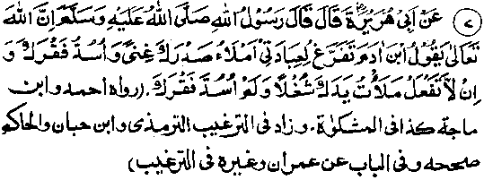

Chapter Six · Section (d): Ahadith on the foregoing subjects (concerning the excellence of Tawakkul)
Hadith 7

Rasulullah Sallallaho alaihe wasallam has stated that Allah’ Ta ‘ala demands: "O son of Adam, devote yourself to my worships I shall make you feel contented and remove your poverty. But if you do not do so, I shall keep you busy with worldly engagements and will not remove your poverty."
There are many more Ahadith on the same subject. Imraan bin Husain Radhiallaho anho reported Rasulullah Sallallaho alaihe wasallam as saying, "He who reserves his devotion to Allah alone, making himself subservient to Him alone, Allah Ta'ala Himself fulfils all his needs and provides for him from such sources as he could never imagine; and he who makes the worldly gains his sole concern, Allah Ta'ala leaves him alone to deal with the world."
Anas Radhiallaho anho narrates that Rasulullah Sallallaho alaihe wasallam once said "A person whose sole concern is for worldly interests, undertakes journeys for the same and remains preoccupied with it all the time, Allah Ta'ala always makes him fear the impending poverty and hunger. (He remains in constant worry, thinking his income to be too small to make both his ends meet.) Thus, much of his time is wasted in such idle cares, because he can only get as much as has been decreed for him. And, if someone concentrates on the Hereafter, makes it the sole aim of his life, undertakes journeys for the same and remains preoccupied with it all the time, Allah Ta'ala protects him from worldly cares, grants him self-sufficiency and bestows upon him an unconcern about material things. He is blessed with perfect peace in his life and the world demeans itself before him."(Targheeb). The “world demeaning itself means that, as everyone must inevitably get what has been ordained for him, his apportioned share comes to him of itself. (We have already quoted a number of Ahadith to the effect that a man’s livelihood pursues him in the same way as his hour of death. It is bound to reach him under all circumstances and if he receives it with an air of indifference, it would look as if the world is demeaning itself before a person who does not care for it.
In another Hadith, Rasulullah Sallallaho alaihe wasallam is reported to have said, ‘Whoever seeks what Allah Ta'ala has in store for him (in the Hereafter), living with nothing except the skies as a cover and using the ground as a bed and having no anxiety for worldly things, will have food without having to till the land and get fruit to eat, without having to plant a garden. He is the one who puts his trust in Allah Ta'ala and always struggles to win His pleasure; so, Allah Ta'ala appoints the skies and the earth to procure him his livelihood; never do they hesitate to bring him the sustenance He desires. In this way, he gets all his provisions without the fear of reckoning on the Day of Judgement.’ (Durre Manthur)
According to another Hadith, Ibne Abbas Radhiallaho anho is reported to have said: "Rasulullah Sallallaho alaihe wasallam delivered a sermon in Masjid-al-Khaif at Minaa, in which he said, after praising Allah Ta'ala, "Whoever makes this world his only concern, Allah Ta'ala causes his affairs to be disturbed with a variety of worries, he is all the time haunted by the fear of privation and, yet, he cannot get more than his allotted portion of worldy goods."
Abu Zarr Radhiallaho anho reports Rasulullah Sallallaho alaihe wasallam as saying, "He who hankers after this world, loses Allah Ta'ala’s concern for him; he who does not care for (the welfare of) the Muslim community, loses their regard for him. We have no concern for a person who demeans himself of his own accord (for worldly gains). Indeed it is not befitting for a Mo’min to demean himself before others, for some money or for any other paltry gains of this world." (Undoubtedly such a person is not aware of his own worth as a Mo’min and he tarnishes the good name of his noble ancestors.) And his noblest connection is that of belonging to the Ummah of Rasulullah Sallallaho alaihe wasallam, the pride of all Rasuls.
Anas Radhiallaho anho reports Rasulullah Sallallaho alaihe wasallam as saying: ‘Four things are signs of misfortune:
1. Tearless eyes (eyes that do not shed tears from fear of Allah Ta'ala);
2. Hard-heartedness (i.e. having a heart that is not softened by the thoughts of the Akhirah, nor moved to sympathy for others);
3. High hopes about distant future.
4. Greediness about worldly gains. (Targheeb)
Abu Dardaa Radhiallaho anho once exhorted people, thus: “O people! What is the matter with you? I see that(because of death)the number of Ulama among you is decreasing day by day, and the ignorant among you do not care to acquire knowledge. Start acquiring it lest, because of the death of Ulama, a time should come when you may find no one to instruct you in religious knowledge properly. I see that you are greedy for hoarding provisions, even though your share is pre-ordained. But you neglect acquiring knowledge and performing good deeds, for which you have been made responsible. I see the worst among you are those who look on Zakaat as a fine, do not observe Salaat at the proper time and neglect recitation of the Holy Qur'an.” (Tanbee-Hul-Ghaafileen)